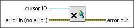

Destroy Cursor VI
Owning Palette: Cursor VIs
Requires: Base Development System
Closes a reference to a cursor and changes the cursor to the default cursor in any VIs using the reference.
(Real-Time Module) You cannot use this VI in VIs that run on RT targets.

 Add to the block diagram Add to the block diagram |
 Find on the palette Find on the palette |